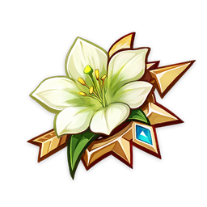
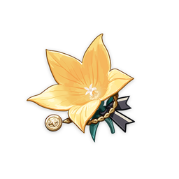

Genshin Impact · Versión 7.2
Análisis del Rol y Escalado
Kaedehara Kazuha es un personaje de elemento Anemo originario de Inazuma que utiliza Espada Ligera y se posiciona en el tier T1 (A+) Support dentro del rol de Buffer de Daño Elemental (+40% DMG), Control de Masas (CC) & Reductor de Resistencias (-40% VV). Su rendimiento en combate gira en torno a este eje principal: Escalado por Maestría Elemental (1,000 EM = +40% Bono Daño Elemental al equipo).
Para maximizar su aporte en el equipo, la configuración prioritaria combina Juramento por la Libertad con el conjunto de artefactos Sombra Verde Esmeralda / Viridescent Venerer (4 piezas), respetando la jerarquía de estadísticas 1. Maestría Elemental (Meta: 900 – 1,000 EM) > 2. Recarga de Energía% (160% - 190% ER) > 3. Prob. Crítica (si lleva Favonius) y subiendo sus habilidades en orden: Habilidad Elemental (E) = Definitiva (Q) >>> Ataques Normales.
Mejores Armas
Opciones recomendadas ordenadas por rendimiento según el meta actual y compatibilidad con sus rotaciones:
-
 Juramento por la Libertad ★★★★★Opción por rol+198 Maestría Elemental y buff de +20% ATQ y +16% daño en normales/cargados/descendentes.
Juramento por la Libertad ★★★★★Opción por rol+198 Maestría Elemental y buff de +20% ATQ y +16% daño en normales/cargados/descendentes. -
 Luz Lunar de Xifos ★★★★Opción por rolConvierte su altísima EM en recarga de energía pasiva para él y todo el equipo.
Luz Lunar de Xifos ★★★★Opción por rolConvierte su altísima EM en recarga de energía pasiva para él y todo el equipo. -
 Espada de Favonius ★★★★Opción por rolResuelve cualquier problema de recarga de energía con partículas blancas para el equipo.
Espada de Favonius ★★★★Opción por rolResuelve cualquier problema de recarga de energía con partículas blancas para el equipo. -
 Espina de Hierro ★★★★Opción por rolForja accesible que aporta +165 de Maestría Elemental pura.
Espina de Hierro ★★★★Opción por rolForja accesible que aporta +165 de Maestría Elemental pura. -
 Diluvio Florífero ★★★★Opción por rolEspada de evento gratuita con +165 ME ideal para amplificar Torbellino.
Diluvio Florífero ★★★★Opción por rolEspada de evento gratuita con +165 ME ideal para amplificar Torbellino.
Mejores Sets de Artefactos
Combinaciones de 4 piezas o mezclas de 2 piezas para maximizar su contribución:
-

Sombra Verde Esmeralda / Viridescent Venerer (4 piezas) BiS Obligatorio-40% Resistencia Elemental al elemento que hace Torbellino (el debuff más fuerte del juego).
-

Instructor (4 piezas) Soporte Reacciones+120 de Maestría Elemental a todo el equipo al activar una reacción elemental.
-
 2p Maestría Elemental + 2p Maestría Elemental Transición F2P
2p Maestría Elemental + 2p Maestría Elemental Transición F2P+160 de Maestría Elemental pasiva para maximizar el bono elemental transferido.
Estadísticas Principales y Secundarias
Atributos prioritarios en artefactos para un balance óptimo de daño o soporte:
| Pieza | Estadística Principal |
|---|---|
| Reloj (Arenas) | Maestría Elemental (o Recarga si falta ER) |
| Cáliz | Maestría Elemental |
| Corona | Maestría Elemental (o Prob. CR con Favonius) |
Prioridad de Subestadísticas
- 1. Maestría Elemental (Meta: 900 – 1,000 EM)
- 2. Recarga de Energía% (160% - 190% ER)
- 3. Prob. Crítica (si lleva Favonius)
Prioridad de Talentos
Habilidad Elemental (E) = Definitiva (Q) >>> Ataques Normales
Objetivos de Estadísticas (Nivel 90)
Las metas numéricas exactas de Kaedehara Kazuha varían según el arma equipada, los refinamientos y la generación de partículas de su equipo.
Prioriza cumplir primero la Recarga de Energía necesaria para mantener la rotación fluida de su Habilidad Definitiva antes de buscar subestadísticas ofensivas adicionales.
Con piezas principales de Maestría Elemental (o Recarga si falta ER), Maestría Elemental y Maestría Elemental (o Prob. CR con Favonius), enfoca tu farmeo de artefactos en: 1. Maestría Elemental (Meta: 900 – 1,000 EM) > 2. Recarga de Energía% (160% - 190% ER) > 3. Prob. Crítica (si lleva Favonius) (Escalado por Maestría Elemental (1,000 EM = +40% Bono Daño Elemental al equipo)).
Talentos de Combate y Materiales (Nivel 1 al 10)
Habilidades principales de Kaedehara Kazuha y desglose exacto de libros, materiales y Mora para mejorar sus talentos:


Composiciones de Equipo Recomendadas
Alineaciones con mayor sinergia elemental y amplificación de daño en el Abismo y Teatro Fantasía:
Neuvillette Hyper
Neuvillette • Furina • Kazuha • Xilonen
Raiden Hypercarry
Raiden Shogun • Sara • Kazuha • Bennett
Materiales de Ascensión (Nivel 1 al 90)
Recursos totales requeridos para desbloquear las 6 fases de ascensión de Kaedehara Kazuha. Coste total de Mora en ascensiones: 420.000 Mora.


Sinergias y Guías Relacionadas
Explora las fichas de armas, artefactos y materiales de los principales compañeros de equipo para Kaedehara Kazuha: